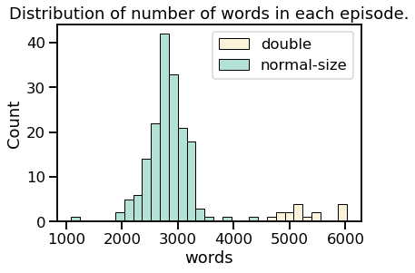
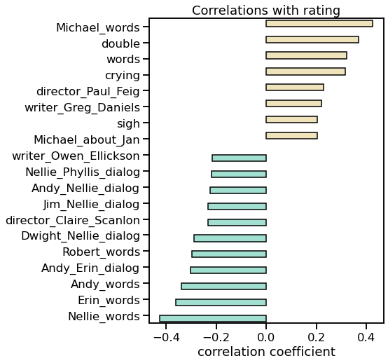
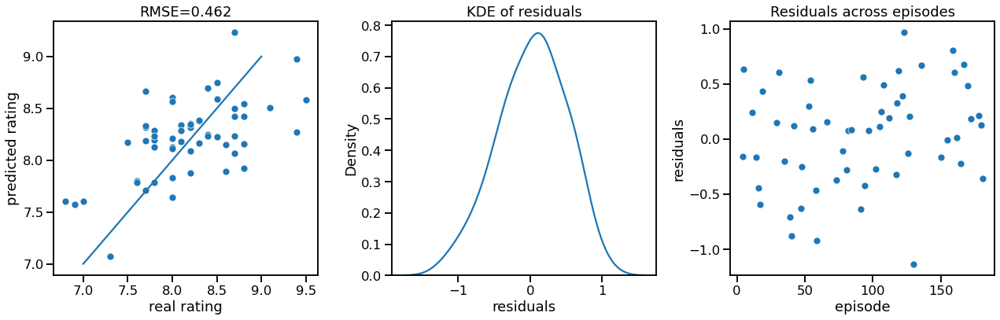
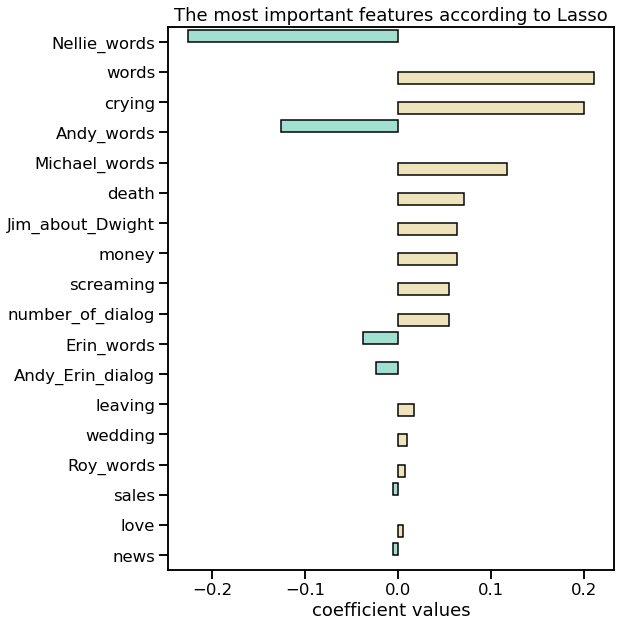
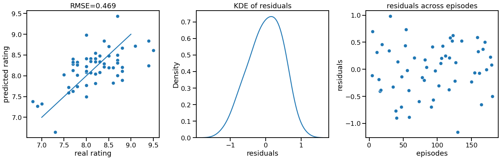

“Sometimes I’ll start a sentence, and I don’t even know where it’s going. I just hope I find it along the way.” - Michael Scott
This project is about "The Office", American sitcom showing everyday life of a typical office. One who saw this sitcom probably noticed that engagement and hilarity of episodes are not constant in time and slowly degrade through seasons. Of course, you can find a plenty of hypothesis on YouTube explaining why this fading happens. But I ask myself: is it possible to explain episode ratings using data science approach? Are there features that influence ratings the most? Can I create a recipe for ideal episode? Those were my motives to start working on this project.
In this post I will show you my main results . To see the details of data processing and modeling as well as more results, see my Jupyter Notebook.
P.S. This is learning project, so I didn't check if there is similar analysis on the web and therefore do not claim any priority or uniqueness.
"Wikipedia is the best thing ever. Anyone in the world can write anything they want about any subject. So you know you are getting the best possible information." - Michael Scott
To predict episode popularity I needed to have information about episode's rating and some data on the episode content. I decided to use IMDB rating to characterize score of each episode. Here I found nice dataset with this information already extracted and saved as .csv. To describe each episode I used it's script and names of director and writer who created it. I was lucky to find this library, called schrute, containing lines of each character for each episode. It was nice to work with this library since one can easily transpose it into pandas data frame format.
To summarize, I had following initial data for each episode:
I didn't use it in my analysis season and episode number, title episode description, and air date since they do not help to construct ideal episode. All remaining properties were used in episode characterization.
Main obstacles I faced in data preparation phase was inconsistency in episode numeration in databases. In schrute database all double series count as one. In database with IMDB rating some double episodes count as one, while others as two. I decided to use schrute numeration since I don't know how to separate script for double episode in two parts (except by doing it by hand). I merged some episodes in the IMDB database and changed numeration for the rest. As soon as all numeration was fixed, I was able to combine this two databases in one.
Data cleaning included transformation of writer and director names into categorical type and extracting month of release from air date.
“Okay, too many different words coming at me from too many different sentences.” - Michael Scott
At this step I used script information (lines of each character in each episodes) to extract some meaningful features which could help to characterize each episode. To work with text I used nltk library. I should point out that my analysis of the text is purely mechanical (counting the word) instead of real language processing, since, as I feel, deep semantic analysis is a topic for another project, a big one (“That’s what she said.” Michael Scott).
Preprocessing of text included tokenisation, deleting non-alphabetic symbols and sometimes deleting stop words (common words, which do not provide useful information).
First feature I wanted to extract was the number of words for each episode. I didn't delete stop words for this calculation. There are two distinct areas in distribution of words, corresponding to normal-length episodes and double episodes. For normal episodes mean number of words is 2812, for double episodes it is 5329 (median is 5200). It means, in double episode characters do not speak twice as much as in normal, but slightly less.
Another interesting feature is the number of words for each character. Below total number of words across all episodes is shown for 20 most talkative characters.

It is clear, that Michael is champion in talking. Even though Michael has been absent for two seasons, he talks much more than characters present all the time. Looking at this plot one can easily separate the primary characters from the secondary ones. Primary characters (Michael, Dwight, Jim, Pam and Andy) talks at least twice as much as secondary.
Next step was to count number of words for each characters in each episode. I made it for top 30 most talkative characters. To be able to easily compare double and normal episodes, I normalized number of words said by character by total number of words in this episode. I ended up with a percentage of how many words each character said relative to all the words said in the episode.
In the figure below number of words of most talkative characters is shown as fraction of total words in all episodes of a given season. One can clearly see that share of airtime when Michael speaks decreases almost linearly with the time. But as long as Michael stayed on the show, the free time was taken up by secondary characters, not the primary. That is, the airtime of Dwight, Jim and Pam didn't change a lot. Only during two last seasons Dwight and Andy involvement increased drastically in an attempt to fill in the emptiness after Michael's leaving.

It was also interesting to me, how the number of words for each characters correlates with the number of words for other characters. Visualization of correlation matrix is shown below for 20 most talkative characters.

The first thing that catches my eye is that Michael has mostly zero or negative correlations with people. It seems to be true, because Michael tries to dominate in all conversations and tends to occupy all the air time. The only positive correlations he has are with Jan and Holly with whom he had romantic relationships.
But this correlation table is averaged through all the seasons. For each season picture differs cardinally. For example, let's look at Michael and Dwight fraction of words for each episode for first six seasons. In first and third season we can see clear linear dependency: the more Michael talks the less Dwight talks and vice versa. In season 2 and 4 the speech of Dwight occupies approximately the same part of the episode and doesn't correlate with Michael words


Another feature that could be important in rating prediction is number of dialogues between characters. In schrute dataset there are only sequences of phrases told by character. There are no scene descriptions or timing of each line that could help identify beginning and end of the dialogue. So, in searching for dialogues I could only rely on sequence of lines. Here I assumed that if characters' phrases alternate, these characters talk to each other. I counted as a dialog a set of at least 4 lines said by two characters where characters' lines alternate. Using this technique I may count last line of the previous dialog as the first line of the following one, so, the error of number of lines in dialog could be +- 2 lines.
I've calculated number of dialogues in each episode (divided by 2 for double episodes) and length of dialogues. Let's look how dialogues change with the time. It seems that from season to season dialogues become shorter and in each episode number of different dialogues between different characters increase. So, in late seasons there are a lot of short dialogues.

Keeping in mind Michael's talkativeness one could expect all Michael's dialogues to be on the top of the list. But the second and the third most common dialogues are with Jim. This is probably because Michael speaks a lot by himself and less in dialogues (a negative correlations of spoken words between Michael and other characters proofs this explanation).

Using dialog information we can have some conclusion about characters' relationships. For this I drew chord diagram of dialog lengths between characters, where width of lines represents number of lines. For simplicity and readability I used threshold by 5% of the longest dialog (between Michael and Dwight), so, you see only dialog with total lines more than 113. I drew the chord diagram using nxviz library.
Color denotes groups of characters divided by the number of words spoken: green - Michael, yellow - other main characters (total number of spoken words more than 40000), lilac - secondary characters with almost equal number of spoken words (about 10000), red - secondary characters with number of total words less than 9000.

The most communicative person was once again Michael. Most of Michael dialogues happen with Dwight. With Jim or Pam he talks twice less than with Dwight. Among secondary characters most popular conversation partners for Michael are Jan and Holly.
After Michael, the most active relationships are between Jim and Pam, and Jim and Dwight. Having such active dialogues with Pam and Dwight Jim is quite uncommunicative with other collegues. Dwight and Andy are more social active, having a lot of connections with secondary characters. It is also funny to note, that Toby performs duties of human resource representative very poorly, having conversations only with his boss.
As a matter of idle interest I tried to understand the nature of each character by her words. For this I counted appearance of some words in character's speech and normalized it by total words said by the character. By doing this I could see what fraction of character's speech is taken up by the words.

By counting appearances of 'sorry' I found out that Erin is the most apologizing character. Title of the most rude character goes to Kelly. Surprisingly, Stanley is the one who talks the most about work and day to day duty (I mean paper). It is not that unexpected actually since Stanley doesn't talk about his private life and work is the only thing that unites him with the others. Dundie for most romantic person goes Holly. Finally, Jan is the one obsessed the most about Michael, 2% of her words are Michael' name.
Another way of character's characterization is to count most distinctive words they used. Simple counting of word's frequency will not be so informative here, since each character probably will have the same most frequent word (such as 'know', 'okay', 'right). I used tf-idf (term frequency-inverse document frequency) algorithm to find out words typical only to the character. For example, most frequent character's word used a lot by other characters would have really low tf-idf score, while word used only by this character will have high tf-idf score. Shown below are word clouds of most distinctive words used by main characters, with the size of word being correspondent to its tf-idf score.


I didn't show here all the features I extracted.
The other features I calculated was:
If you are interested in details, look at Jupyter Notebook.
“Would I rather be feared or loved? Easy. Both. I want people to be afraid of how much they love me.” - Michael Scott
Before answering that question let's look at the rating distribution. Histogram of ratings seems to be symmetric with distinctive tails. There are no outliers in this distribution. Mean rating is about 8.2, median is the same. Time evolution of ratings shows a clear maximum for 3 and 4 season and quite remarkable decline in 8 and 9 seasons.

I calculated correlation of rating with each feature discussed before. Only strong correlations are shown in figure below. It seems viewers really like when Michael is talking and equally don't like when Nellie is talking. Erin's and Andy's talking are not highly scored as well.
There are several writers and directors who have strong correlation with ratings. For example, we can conclude that viewers like episodes filmed by Paul Feig very much. As a director he filmed 14 episodes with mean rating 8.7, 12 of them having rating higher than mean value 8.2.
Such actions as crying and sigh also have quite high correlation with rating. Does it mean that viewers like when characters suffer?
"This is a dream that I've had…since lunch…and I'm not giving it up now." - Michael Scott
We can finally get to the most interesting part, namely the creation of model to predict rating. The main criteria for model for me was its interpretability, so the most obvious choice was regression model.
After extensive feature engineering I had 305 features I could use for model. This number is too high to build interpretable model, so feature selection is required. Another reason for feature selection is the strong intercorrelation of some features (e.g., the number of words said by Michael is negatively correlated with number of words said by almost all main characters).
I used Lasso regression to select the features with the highest predictive power of the rating. I think Lasso suits me very well cause it leaves only important features ( by assigning zero weights to less important ) and deals with correlated features by deleting on of them. In Lasso regression the number of features retained for the model is determined by alpha coefficient. I used LassoCV model which selects the best alpha value by cross-validation.
Data preparation for Lasso included splitting the data into train and test sets and scaling them. I used StandardScaler from sklearn library. I first set up the scaling on the training data and then applied it to train and to test datasets. This way I avoided leakage of test data into training dataset.
Last thing I did before training the model was to remove features appeared in only a few episodes. For example, I don't want to have feature in my model appearing in only two episodes. This makes my model less informative in terms of describing the average episode rating. To select the minimum number of episodes in which features should appear, I used cross validation with LassoCV estimator. It shows that RMSE is weakly depend on threshold number of episodes, increasing notable only for the zero threshold and for the very high threshold. I chose 20 episodes as the threshold number. Thus, only features appearing in more than 20 episodes (15%) will be taking into account. Applying this rule I selected 70 parameters out of 305.
On the graphs below you can see a comparison of the rating predicted for test data and actual rating. For episodes with an average rating the predictions are quite good, with the most noticeable difference observed for high and low ratings. The distribution of residuals is symmetric and has almost no bias. The right-hand graph illustrates the residuals sorted by episode appearance, and shows that there is strong tendency to predict higher rating for episodes from last season. This could mean that for the last seasons I haven't found proper feature which negatively influence the rating.
Out of 70 features LassoCV selected 18 most important. Let's look at all of these features. According to this model high rating episodes should contain a lot of talking since 'words' feature are second most important. But not Nellie's talking. Nellie occurs to be the character having the worst impact on the rating. Among other characters causing bad rating are Andy and Erin as well as their dialogues. In contrary, Michael speeches positively affect the rating. Viewers also very likes Jim speaking about Dwight.
Interesting that most popular episodes are based on crying (this feature shows how much word 'crying' occurs in director notes and, consequently, in the performance of the actors). Another action ranked among the important is screaming.
Features 'death', 'money','leaving','wedding','sales','love','news' show how much these words appear in the character speech. It seems, that most popular episodes include talking about death and money. Predictably, talking about wedding is also important for good rating. People really love episodes with a lot of dialogs. Dialogues do not have to be long since 'number_of_dialog' only counts number of dialogues, but not their length.
I tried use all 18 features in linear regression model. I used statsmodels library with ordinary least squares fitting, because it provides a lot of information about fitting. It provides RMSE = 0.56 and adjusted R -square = 0.538. So, my model explains only half of variance in rating. Probably, it is not so bad results, since I used only information extracted from script. Obliviously, there are much more parameters influencing rating!
Looking at p-values for each feature calculated by statsmodels I saw that some of them are quite high. I decided to check the optimal number of parameters for my simple linear model. I used cross-validation on scikit-learn ordinary least square model. Based on calculation of RMSE and R-squared I chose 7 features to be the optimal number.
My final linear regression model with 7 features provides RMSE=0.469 and adjusted R-squared = 0.467.
"I am running away from my responsibilities. And it feels good." - Michael Scott
At the end, we are able to name most important features of episode, influencing rating. They include how much characters cry and talking about death, number of words, how much Michael talks and how less Nellie and Andy talk. My equation for high rated episode would be:
rating = 7.3227 - 0.0565 * Nellie_words + 0.0002 * words + 0.1467*crying - 0.0135 * Andy_words + 0.0063 * Michael_words + 5.8557 * death + 0.1633 * Jim_about_Dwight
Using this equation one can try to construct ideal episode scored as 10/10 by viewers. My approach was simple - maximize the parameters with a positive coefficients and minimize the parameters with negative coefficients.
I started by putting Nellie_words and Andy_words to zero. Assuming that "Goodbye, Michael" and "Finale" are episodes with maximum allowable amount of tears, I choose crying to be equal to 6. Maximum words ever appeared in episode was 6029 (it was double episode), so, I put words = 6000. "Michael_words" feature shows what proportion of the words in the episode were said by Michael. I choose it really high, and assumed that 80% of the words in episode are said by Michael. "Jim_about_Dwight" shows number of appearance of DWight name in Jim lines in proportion to number of words said by Jim. I assumed that 10% of Jim's words were about Dwight. Last parameter (count of "death" appearance in the script) I used to adjust rating value to be exactly 10. It turns out that 10% of all words told in episode should be "death". Let's assume that it is possible.
So, we can calculate rating of the best episode now:
rating = 7.3227 - 0.0565 * 0 + 0.0002 * 6000+ 0.1467 * 6 - 0.0135 * 0 + 0.0063 * 0.8+ 5.8557 * 0.1 + 0.1633 * 0.1 = 10
To sum up, the ideal episode will be double episode, containing a lot of Michael (80% of talking will be done by Michael), a lot of crying (probably most of them would be done by Michael) a lot pf talking about death (again, Michael) and just a little bit of Jim planning prank on Dwight. That's my recipe.
Of course, my analysis does not pretend to be complete and deep.
Many other episode's properties can influence the rating, for example number of good jokes or dramatic plot twists.
But I am happy with my results, since using only simple word counting I was able to predict episode rating with quite good accuracy.